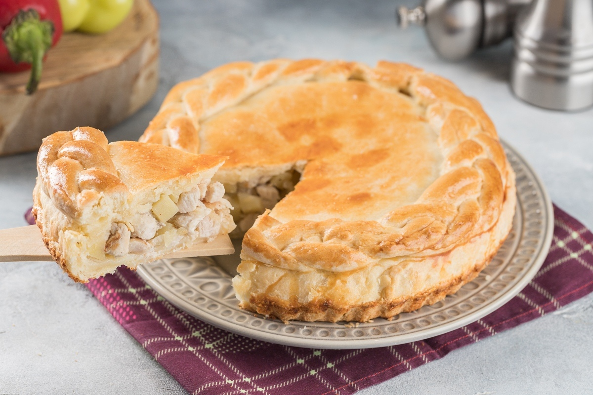

Kurnik

Description
Kurnik also known as wedding pirog or tsar pirog, is a dome-shaped savoury Russian pirog usually filled with chicken or turkey, eggs, onions, kasha or rice, and other optional components. Sometimes filled with boiled rooster combs, this pirog originated in Southern Russia, especially in Cossack communities, and was used as a "wedding pirog" in the rest of the country. It is dome-shaped, unlike any other non-sweet pirog. In special cases, it was served to tsar himself. Even today, this pirog is served on special occasions in most of Russia.
Ingredients
- 1.5kg of flour
- 1 litre of fermented milk
- 3 tablespoons of sour cream
- 0.2kg of margarine
- Cup of water
- 3 pinches of salt
- 1kg of any kind of meat you want
- 1kg of potato
- 2 onions
Directions
- To make a dough mix flour, fermented milk, margarine, sour cream and salt and leave it for 40-50 minutes.
- To make a filling finely chop meat, potato, onion. Add salt and pepper to taste.
- Divide a dough into 2 parts. Roll out a dough and add all ingredients, cover it with a second layer of dough, make a borders like on a picture. Make a hole in a center to see ingredients and add cup of water.
- Bake in oven for 2.5 hours.
Home page